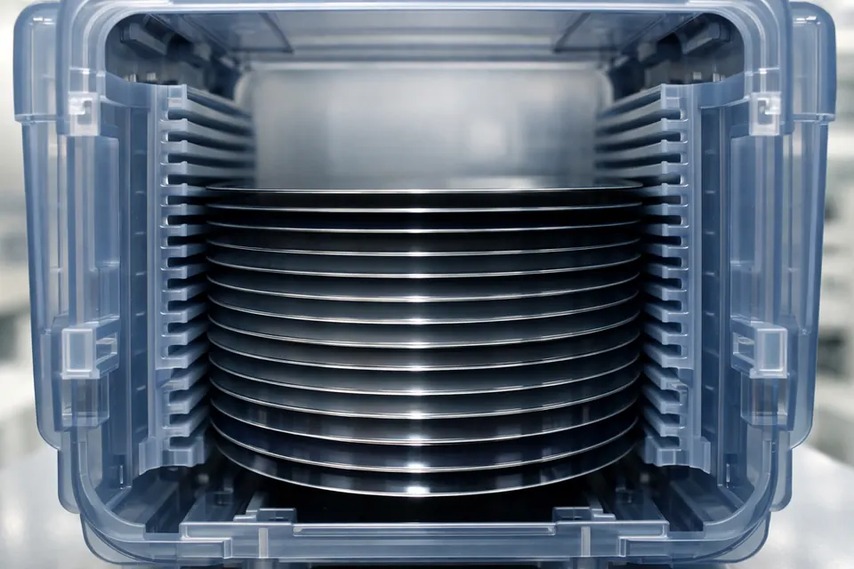
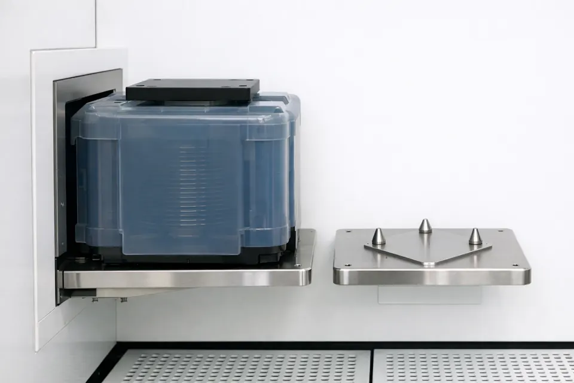
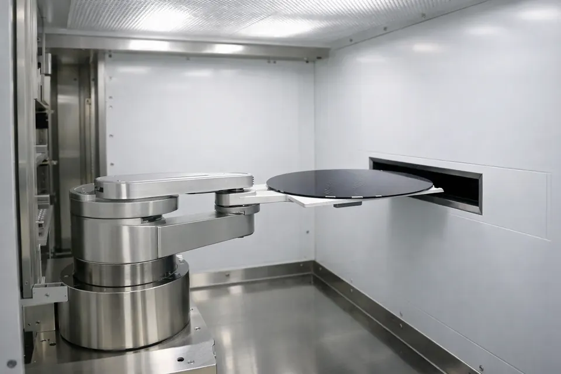

로봇및센서실습 · 반도체장비전공 · CHAPTER 2
장치 구성
웨이퍼 이송 시스템의 장치들
1강에서 웨이퍼가 지나가는 길을 봤습니다.
2강에서는 그 길 위의 여섯 장치가 각각 어디에 있고 무슨 일을 하는지 하나씩 익힙니다.
이번 강의 방식 —
각 장치를 슬라이드로 보고, 곧바로 시뮬레이터 도면에서 같은 장치를 클릭해 설명을 확인합니다.
학습 목표
이 강의가 끝나면
1
여섯 장치를 짚는다
FOUP · Load Port · EFEM · Pre-aligner · Load Lock · Transfer/Process Chamber의 위치를 말한다.
2
기능을 한 줄로
각 장치가 "무엇을 하는 곳"인지 한 문장으로 설명한다.
3
경계를 긋는다
어디까지가 대기(760 Torr)이고 어디부터 진공인지, 그 경계에 무엇이 있는지 안다.
실습 연결 — 시뮬 미션: 6개 장치를 모두 클릭하고,
대기·진공 영역의 경계(Load Lock)를 확인합니다.
복습 · 전체 지도
여섯 장치가 한 줄로 늘어서 있습니다
왼쪽부터 오른쪽으로 — 담고(FOUP) → 붙이고(Port) → 옮기고(EFEM) → 맞추고(Pre-aligner)
→ 압력 바꾸고(Load Lock) → 진공 로봇이 → 챔버로. 이번 강의는 이 순서대로 하나씩 봅니다.
① 담는 곳
FOUP — 웨이퍼를 담아 옮기는 밀폐 상자
1
밀폐 — 필요하면 질소로
문을 닫으면 바깥 공기·먼지가 차단됩니다. 질소 퍼지형은 안을 질소로 채워 산화·습기까지 막습니다. 공장 복도를 지나도 웨이퍼는 안전합니다.
2
25칸 슬롯
실제 25장(시뮬은 5칸). 몇 번 칸인지가 곧 로봇의 Z축 높이가 됩니다.
3
도킹 전엔 안 열림
FOUP 문은 Load Port에 붙은 뒤 장비 문과 함께 열립니다.

기능 한 줄 — "웨이퍼를 오염 없이 보관·운반하는 밀폐 카세트."
② 붙이는 곳
Load Port — FOUP이 장비에 도킹하는 문

도킹(Docking)
FOUP을 Load Port에 정확히 안착시킵니다. 위치가 어긋나면 이후 매핑이 전부 틀어집니다.
도어 오픈
FOUP 문과 장비 문이 동시에 열려, 바깥 공기가 들어갈 틈 없이 내부가 이어집니다.
슬롯 매핑(Mapping)
센서가 25칸을 훑어 어느 칸에 웨이퍼가 있는지 목록을 만듭니다. (7강에서 자세히)
기능 한 줄 — "FOUP을 도킹·개방·매핑해 장비 안으로 들이는 관문."
순서 고정 — 도킹 → 도어 오픈 → 매핑.
이 순서가 아니면 인터록이 막습니다.
③ 대기 로봇의 집
EFEM — 대기 이송 로봇이 일하는 청정 공간
1
Equipment Front-End Module
Load Port들과 Load Lock 사이의 상압 청정 공간. 안에 대기 이송 로봇과 Pre-aligner가 있습니다.
2
팬 필터로 청정 유지
위에서 아래로 청정 공기를 흘려(다운플로우) 먼지가 웨이퍼에 앉지 못하게 합니다.
3
여기 로봇이 R/θ/Z로 움직인다
FOUP ↔ Pre-aligner ↔ Load Lock 사이를 나릅니다. (3강 로봇 구조)
기능 한 줄 — "대기 이송 로봇의 작업 공간이자 웨이퍼의 상압 허브."

④ 맞추는 곳
Pre-aligner — 웨이퍼의 방향을 잡는 회전대
1
중심(Centering)
로봇이 집은 웨이퍼가 살짝 치우쳐 있으면 중심을 다시 잡습니다.
2
Notch 정렬
웨이퍼 가장자리의 홈(Notch)을 정해진 방향(예: 0°)으로 돌려 놓습니다.
3
왜 필요한가
공정 패턴이 웨이퍼 방향에 맞아야 하기 때문입니다. 방향이 틀리면 패턴이 어긋납니다. (9강)
기능 한 줄 — "웨이퍼의 중심과 방향을 규격에 맞추는 회전 정렬대."
⑤ 관문
Load Lock — 대기와 진공을 잇는 에어록
왜 필요한가
대기와 진공을 바로 이으면 진공이 깨집니다. 작은 방에 웨이퍼를 넣고 압력을 맞춘 뒤 반대편 문을 엽니다.
Pump Down / Vent
진공으로 보낼 땐 Pump Down(배기), 대기로 뺄 땐 Vent(주입)로 압력을 바꿉니다.
두 문의 규칙
대기측·진공측 두 밸브는 절대 동시에 열리지 않습니다. 인터록으로 막습니다.
기능 한 줄 — "웨이퍼의 압력을 바꿔 대기와 진공을 오가게 하는 관문." (10강)
⑥ 진공 로봇의 집
Transfer Chamber — 진공 속 로봇의 방
1
항상 진공 유지
Load Lock과 공정 챔버 사이의 진공 허브. 문을 열어도 진공이 유지됩니다.
2
구동부가 진공 밖에
모터·베어링은 진공 밖에 두고 자력으로 팔만 진공 안에서 움직입니다. 오염·발열을 피하려고요.
3
여러 챔버로 분배
하나의 웨이퍼를 여러 공정 챔버(PM1·PM2…)로 나눠 보냅니다. (11강)
기능 한 줄 — "진공 이송 로봇이 웨이퍼를 공정 챔버로 분배하는 진공 허브."
⑦ 목적지
Process Chamber — 실제 공정이 일어나는 곳
여기서 칩이 만들어진다
식각(Etch)·증착(Deposition) 같은 실제 공정이 진행되는 진공 챔버입니다. 이송 장치의 최종 목적지입니다.
이송의 역할은 여기까지
이송 로봇은 웨이퍼를 이 챔버에 정확히 올려놓는 것까지가 임무. 공정 자체는 다른 과목에서 다룹니다.
기능 한 줄 — "식각·증착 등 공정이 수행되는 진공 챔버 (이송의 종착지)."
이 과목의 범위 — 우리는 "챔버 안에서 무슨 공정을 하나"가 아니라,
"웨이퍼를 거기까지 어떻게 안전하게 옮기나"를 배웁니다.
배치
왜 이 순서로 늘어서 있나

흐름을 따라
담고(FOUP)→붙이고(Port)→옮기고(EFEM)→맞추고(Aligner)→압력바꾸고(LL)→공정(Chamber). 장치 배치가 곧 웨이퍼의 여정입니다.
대기는 왼쪽, 진공은 오른쪽
Load Lock을 경계로 왼쪽 상압, 오른쪽 진공. 색으로도 구분합니다.
암기 팁 — 순서만 외우면 장비 절반은 이해한 셈.
청정
청정도 — 왜 밀폐하고 다운플로우인가
1
FOUP 밀폐 이동 중 외기 차단.
2
EFEM 다운플로우 위→아래 청정 공기로 먼지가 웨이퍼에 앉지 못하게.
3
진공 챔버 구간은 공기 자체가 거의 없음.
이유 — 먼지 한 톨이 회로보다 굵어 한 장을 불량으로 만들 수 있어서(1강).
두 로봇
대기 로봇 vs 진공 로봇 — 한 장 비교
| 대기(EFEM) | 진공(TM) | |
|---|---|---|
| 환경 | 760 Torr | 0.01 Torr |
| 구동부 | 본체 내부 | 진공 밖 |
| 손 | 흡착/지지 | 내열 지지 |
| 축 | R·θ·Z | R·θ·Z |
같은 원리 — 환경만 다를 뿐 세 축과 리듬은 동일(3·11강).
경계
Load Lock — 유일한 관문 다시 보기
왜 하나뿐
대기와 진공을 잇는 문이 여럿이면 진공 유지가 어렵습니다. 하나로 통제합니다.
두 밸브
ATM·TM 밸브는 절대 동시 개방 금지(10·13강).
핵심 개념 — 이 경계가 인터록·시퀀스를 이해하는 열쇠.
용어
이번 강의 용어 정리
| 용어 | 뜻 |
|---|---|
| FOUP | 밀폐 웨이퍼 카세트 |
| EFEM | 대기 이송 모듈 |
| Pre-aligner | 정렬 회전대 |
| Load Lock | 압력 전환 관문 |
| TM / PM | 이송 챔버 / 공정 챔버 |
팁 — 시뮬 도면에서 각 용어를 클릭하면 같은 설명이 뜹니다.
확인
배치를 손가락으로 짚어보기
Q
대기 4장치는? FOUP·Load Port·EFEM·Pre-aligner.
Q
진공 2장치는? Transfer Chamber·Process Chamber.
바로 실습 — 도면에서 여섯 장치를 순서대로 클릭해 확인.
정리 · 경계
어디까지가 대기이고, 어디부터 진공인가
| 장치 | 영역 | 한 줄 기능 |
|---|---|---|
| FOUP | 대기 | 밀폐 보관·운반 |
| Load Port | 대기 | 도킹·개방·매핑 |
| EFEM | 대기 | 대기 로봇의 청정 공간 |
| Pre-aligner | 대기 | 중심·Notch 정렬 |
| Load Lock | 대기⇄진공 | 압력 전환 관문 |
| Transfer Chamber | 진공 | 진공 로봇 허브 |
| Process Chamber | 진공 | 공정 수행 |
핵심 — 대기와 진공을 가르는 유일한 문이 Load Lock입니다.
이 경계 개념이 앞으로 인터록·시퀀스를 이해하는 열쇠입니다.
실습 미션
2강에서 직접 해볼 것
1
여섯 장치 모두 클릭
도면에서 6개 장치를 눌러 이름과 기능 설명을 읽습니다.
2
대기·진공 경계 확인
Load Lock을 클릭해 이 방이 두 영역을 잇는 관문임을 확인합니다.
완료 기준 — "따라하기" 체크 2개가 채워지면 2강 실습 완료.
각 장치를 클릭할 때 이 교재의 해당 슬라이드와 설명이 같은지 비교해 보세요.
정리 · 자가 점검
2강에서 남길 것
1
여섯 장치의 위치·기능
담고→붙이고→옮기고→맞추고→압력바꾸고→분배.
2
경계는 Load Lock
대기와 진공을 가르는 유일한 문.
Q1
대기 영역에 속한 장치를 네 개 말해 보세요.
Q2
Pre-aligner는 무엇을, 왜 맞추나요?
다음 강 — 3강 로봇 구조: R·θ·Z 세 축이 어떤 동작을 만드는지 봅니다.